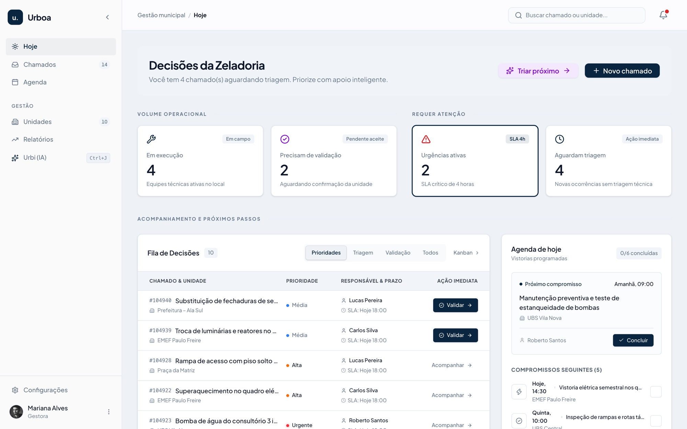

Chamados resolvidos.
Contas em dia.
A plataforma SaaS completa que unifica a zeladoria das escolas, postos de saúde (UBSs) e prédios municipais. Elimine o improviso com controle rigoroso de ordens de serviço, fiscais de contratos e auditoria do TCE.

Do caos operacional à gestão transparente
-
WhatsApp, planilhas e ofícios sem registro
Abertura Padronizada em 45s
Diretores e servidores abrem ocorrências com fotos pelo celular, eliminando intermediários e perda de contexto.
-
Prazos vencidos sem acompanhamento
SLAs Fatais com Congelamento Justificado
Cronômetro legal de 4h a 168h. Se faltar material, o SLA congela mediante justificativa sem penalizar a equipe.
-
Serviço sem comprovação e glosas no TCE
Foto Obrigatória e Aceite da Unidade
Nenhuma OS é encerrada sem foto de conclusão e validação formal da direção da escola ou posto de saúde.
-
Estouro de empenho e contratos vencidos
Trava Dura de Saldo e Vigência
A API bloqueia medições que ultrapassem o saldo empenhado ou contratos fora do prazo legal.
Quatro perfis em um único fluxo
Solicitante
Abre chamados rápidos, acompanha em tempo real e dá o aceite final na conclusão do serviço.
Gestor
Triagem com IA, distribuição balanceada para equipes e fiscalização dos contratos de manutenção.
Técnico
Pauta diária no celular, reporte de anomalias, consumo de peças e evidências fotográficas.
Administrador
Parametrização institucional, controle de alçadas, trilha de auditoria e relatórios fiscais.